항공기체정비기능사 (2015-01-25 기출문제)
1과목: 비행원리
1. 다음 중 테이퍼비(TAPER RATIO)에 대한 LR으로 옳은 것은? (단, Cr : 날개 뿌리시위 , Ct : 날개 끝시위이다.)
- Cr/Ct
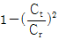
- Ct/Cr
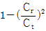
(정답률: 67%)

2. 헬리콥터에서 로터의 회전시 회전면과 원추 모서리 사이에 이루는 각을 무엇이라 하는가?
- 받음각
- 피치각
- 코닝각
- 쳐든각
(정답률: 66%)
3. 다음중 양력(L)을 옳게 표현한 것은? (단, 양력계수 : CL , 공기밀도 : ρ , 날개의면적 : S , 비행기의 속도 : V 이다.)
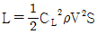
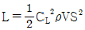
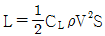
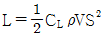
(정답률: 81%)
4. 대류권에서 고도가 높아지면 공기의 밀도와 온도, 압력은 어떻게 변하는가?
- 밀도, 온도, 압력이 모두 감소한다.
- 밀도는 증가하고 온도와 압력은 감소한다.
- 밀도와 압력은 증가하고 온도는 감소한다.
- 밀도와 온도는 감소하고 압력은 증가한다.
(정답률: 71%)
5. 대기중 음속의 크기와 가장 밀접한 요소는?
- 대기의 온도
- 대기의 비열비
- 대기의 밀도
- 대기의 기체상수
(정답률: 78%)
6. 비행기의 하중배수를 식으로 옳게 나타낸 것은?
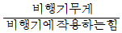
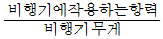
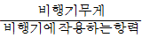
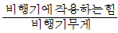
(정답률: 64%)
7. 헬리콥터의 무게가 950kgf, 회전날개의 반지름이 3m 일 때 원판 하중은 약 몇 kgf 인가?
- 33.6
- 35.2
- 37.4
- 39.1
(정답률: 57%)
8. 다음중 항공기 방향 안정선에 가장 중요한 역할을 하는 장치는?
- 수평안정판
- 플랩
- 수직안정판
- 스포일러
(정답률: 76%)
9. 프로펠러 깃 뿌리로부터 깃 끝까지 프로펠러 깃의 기하학적 피치를 균일하게 하기 위한 조치로 가장 옳은 것은?
- 깃각을 변화시킨다.
- 빗김각을 변화시킨다.
- 유입각을 변화시킨다.
- 받음각을 변화시킨다.
(정답률: 67%)
10. 동체 가까이에 있는 날개의 앞전에 실속 스트립과 같은 장치를 부착하여 받음각이 커서 실속하게 될 때, 날개 뿌리부분부터 흐름의 떨어짐을 생기도록 하는 장치로서 날개 끝부분의 실속이 늦어지게 하여 도움날개의 충분한 기능을 발휘할수 있도록 하는 장치는?
- 앞전장치
- 실속방지장치
- 커플링장치
- 실속 트리거 장치
(정답률: 66%)
11. 관의 입구 지름이 10cm 이고, 출구 지름이 20cm 이다. 이관의 출구에서의 흐름 속도가 40cm/s 일 때 입구에서의 흐름의 속도는 약 몇 cm/s 인가? (단, 유체는 비압축성 유체이다)
- 20
- 40
- 80
- 160
(정답률: 48%)
12. 날개골의 공기력중심(aerodynamic center)에서 받음각에 대한 공기력 모멘트 계수의 변화율은?
- 정(+)의 값을 갖는다.
- 거의 변하지 않는다.
- 부(-)의 값을 갖는다.
- 무한대의 값을 갖는다.
(정답률: 60%)
13. 비행기의 이 착륙 성능에서 거리의 관계를 가장 옳게 표현한 것은?
- 지상활주거리 = 이륙거리 + 상승거리
- 이륙거리 = 지상활주거리 + 상승거리
- 상승거리 = 지상활주거리 + 이륙거리
- 이륙거리 = 지상활주거리 - 상승거리
(정답률: 74%)
14. 75m/s 로 비행하는 비행기의 항력이 1000kgf 라면 이때 비행기의 필요마력은 몇 ps 인가?
- 530
- 660
- 72
- 1000
(정답률: 67%)
15. 비행기의 조종성과 정적 안정성에 대한 설명으로 옳은 것은?
- 조종성과 안정성은 상호 보완관계이다.
- 조종성과 안정성은 서로 상반 관계이다.
- 비행기 설계시 조종성을 위해서는 안정성은 무시해도 좋다.
- 비행기 설계시 안정성을 위해서는 조종성은 무시해도 좋다.
(정답률: 78%)
16. 버니어 캘리퍼스에 관한 설명으로 틀린 것은?
- 일반적으로 용도에 따라 M1, M2, CB, CM 등이 있다.
- 일반적으로 아들자는 슬라이더에 눈금이 표시되어 있다.
- 호칭치수는 미터식인 경우 일반적으로 150, 200, 300, 600, 1000mm의 크기로 구분한다.
- 일정한 측정력 이상의 힘이 작용되면 공회전 하도록 랫칫 스톱 기능을 가지고 있다.
(정답률: 75%)
17. 물림 턱의 벌림에 따라 손잡이를 잡을수 있는 정도를 조절하는 그림과 같은 공구의 명칭은?
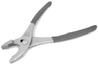
- 스냅링 플라이어
- 슬립조인트 플라이어
- 워터 펌프 플라이어
- 라운드 노즈 플라이어
(정답률: 66%)
18. 항공기의 연료보급에 대한 설명으로 옳은 것은?
- 항공기에서 배유시 접지하지 않는다.
- 연료의 납성분 때문에 피부에 닿지 않도록 한다.
- 안전을 고려하여 폐쇄된 장소에서 연료를 보급한다.
- 항공기, 연료차, 그리고 작업자 상호간에 접지시킨다.
(정답률: 71%)
19. 관제탑에서 지시하는 신호의 종류 중 활주로 유도로 상에 있는 인원 및 차량은 사주를 경계한후 즉시 본장소를 떠나라는 의미의 신호는?
- 녹색등
- 점멸 녹색등
- 흰색등
- 점멸 적색등
(정답률: 80%)
20. 모든 부품이 장탈되거나 분해된 후 세척하지 않은 상태에서 가장 먼저 하는 검사는?
- 육안검사
- 파괴검사
- 분해검사
- 치수검사
(정답률: 87%)
2과목: 항공기정비
21. 항공기 방식작업의 하나로 전해액에 담겨진 금속을 양극으로 하여 전류를 통한 다음 양극에서 발생하는 산소에 의하여 알루미늄과 같은 금속표면에 산화피막을 형성하는 부식처리 방식은?
- 양극산화 처리
- 알로다인 처리
- 인산염 피막처리
- 알크래드 처리
(정답률: 69%)
22. 다음 ( ) 안에 알맞은 것은?
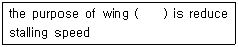
- drag
- tails
- slats
- thrust
(정답률: 66%)
23. 공구 사용 시 주의사항으로 틀린 것은?
- 부품에 알맞은 공구를 선택 사용한다.
- 간단한 공구는 사용전에 교육을 생략한다.
- 작업이 완료된 후에는 녹 방지를 위하여 손질한다.
- 금속칩이 발생하는 작업을 할 때 에는 보안경을 쓴다.
(정답률: 90%)
24. 성능허용한계, 마멸한계 및 부식한계 등을 가지는 장비나 부품에 활용하여 일정 주기별로 감항성을 판단하여 교환을 결정하는 정비방식은?
- 오버홀
- 시한성정비
- 상태정비
- 신뢰성정비
(정답률: 46%)
25. Mg 분말, Al 분말 등 공기중에 비산한 금속분진에 의해 발생하는 화재로서 물을 사용하면 안되며 건조시, 팽창 진주암등을 사용한 질식소화방법이 유효한 화재는?
- A급 화재
- B급 화재
- C급 화재
- D급 화재
(정답률: 74%)
26. 항공기 견인작업(TOWING)에 대한 설명이 아닌 것은?
- 견인속도는 5mph를 초과해서는 안된다.
- 항공기 견인시 잭 포인트를 정확히 지정해야 한다.
- 견인봉은 경인차량으로부터 일단 분리하여 항공기에장착한 다음 다시 견인봉을 견인차량에 연결한다.
- 항공기의 유도선(taxing line)을 따라 견인할때에는 감독자의 판단에 따라주변 감시자를 배치하지 않아도 무방하다.
(정답률: 42%)
27. 장비와 관련된 다음 설명에서 ( ) 안의 알맞은 목적은?
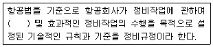
- 생산성향상
- 기술향상
- 안전성확보
- 인력확보
(정답률: 79%)
28. 지상 점검시 작업자가 지켜야 할 사항으로 틀린 것은?
- 작업 시에는 규정보다 작업자의 능력에 따라 작업을 수행해야 한다.
- 작업장의 상태를 청결히하고 정리 정돈하여 사고의 잠재 요인을 제거하도록 노력한다.
- 작업시 보호장구가 필요할 때에는 반드시 보호장구를 착용해야 한다.
- 보다 안전하고 능률적인 작업 수행을 위하여 모든 작업자들은 서로 협조하고 조언해야 한다.
(정답률: 87%)
29. AN21~AN36으로 분류되고 머리 형태가 둥글고 스크루 드라이버를 사용하도록 머리에 홈이 파여있는 모양의 볼트는?
- 아이볼트
- 클레비스볼트
- 육각볼트
- 인터널 렌칭볼트
(정답률: 61%)
30. 최소 측정값이 1/1000mm 인 마이크로미터의 그림이 지시하는 측정값은 몇 mm 인가?
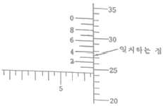
- 7.793
- 7.773
- 7.743
- 7.713
(정답률: 52%)
31. 다음 영문의 밑줄친 부분이 의미하는 것은?
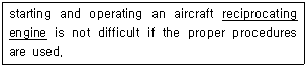
- 성형기관
- 대향형기관
- 왕복기관
- 공냉식기관
(정답률: 75%)
32. 다음 중 와셔의 역할로 틀린 것은?
- 볼트의 길이가 짧을 때 사용한다.
- 진동을 흡수하고, 너트가 풀리는 것을 방지한다.
- 볼트나 스크루의 그립 길이를 조정 가능하도록 한다.
- 볼트와 너트에 의한 작용력을 고르게 분산되도록 한다.
(정답률: 66%)
33. 케이블 주위에 구리로 된 8(팔) 자형태관 모양의 슬리브를 둘러 압착하는 방법을 이용하여 케이블의 단자를 연결하는 방법은?
- 랩솔더 이음 방법
- 5단 엮기 이음 방법
- 스웨이징 단자 방법
- 니코프레스 처리방법
(정답률: 58%)
34. 코일에 교류 전류를 흘려 전자유도를 이용하여 전류의 분포 변화를 관찰함으로써 결함을 발견하는 비파괴 검사 법은?
- 침투탐상검사
- 방사선투과 검사
- 자분탐상검사
- 와전류탐상검사
(정답률: 84%)
35. 두께가 0.064 in 이하인 판재 성형시 균열을 방지하기 위해 릴리프홀 (relief hole)을 뚫을 때 홀 지름의 기준은 몇 in 인가?
- 1/8
- 1/4
- 1/2
- 1
(정답률: 62%)
36. 그림의 동체구조 형식 명칭은?
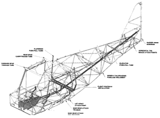
- 응력외피형
- 트러스형
- 모노코크형
- 세미모노코크형
(정답률: 77%)
37. 반고정형 회전날개를 가진 헬리콥터와 관계없는 것은?
- 부분 관절형 회전날개이다.
- 허브에 항력 힌지를 갖고 있다.
- 시소형 회전 날개가 여기에 속한다.
- 대부분 2개의 깃을 가진 회전 날개에서 사용한다.
(정답률: 47%)
38. AA 규격에 대한 설명으로 옳은 것은?
- 미국 철강협회의 규격으로 알루미늄 규격이다.
- 미국 알루미늄협회의 규격으로 알루미늄 합금용의 규격이다.
- 미국재료시험협회의 규격으로 마그네슘 합금에 많이 쓰인다.
- SAE의 항공부가 민간항공기 재료에 대해 정한 규격으로 티타늄합금, 내열합금에 많이 쓰인다.
(정답률: 78%)
39. 한변이 10cm 인 정사각형 단명을 가진 막대에 500N 의 힘이 단면의 수직으로 작용할 때 단면에서의 응력은 몇 N/cm2 인가?
- 0.5
- 5
- 25
- 50
(정답률: 48%)
40. 도면에 기재되는 내용과 설명으로 옳은 것은?
- 도면에는 부품 목록을 기재할수 없다.
- 도면 번호는 부품 목록에만 등록이 된다.
- 모든 항공기 제작사는 동일한 방식으로 도면번호를 부여 한다.
- 도면에 사용되는 적용성 부호는 사용되는 부품의 번호를 나타낸다.
(정답률: 58%)
3과목: 항공기체
41. 시간에 따라 하중의 크기가 변화하면서 작용하여 구조에 진동을 일으키는 하중이 아닌 것은?
- 반복하중
- 교번하중
- 정하중
- 충격하중
(정답률: 54%)
42. 합금강의 분류에서 SAE 1025에 대한 설명으로 옳은 것은?
- 탄소강을 나타낸다.
- 니켈강을 나타낸다.
- 합금원소는 크롬이다.
- 탄소의 함유량은 5%이다.
(정답률: 65%)
43. 항공기의 위치를 표시하는 방식 중 “특정수평면으로부터 수직으로 높이를 측정한 거리”를 무엇이라하는가?
- 버턱선(BUTTOCK LINE)
- 동체위치선(BODY STATION)
- 동체수위선(BODY WATER LINE)
- 날개위치선(WING BODY STATION)
(정답률: 66%)
44. 비행중 항공기의 자세를 조종하기도하며 착륙 활주 중에는 활주거리를 짧게 하는 브레이크 역할도 하는 날개에 부착된 장치는?
- 플랩
- 도움날개
- 슬롯
- 스포일러
(정답률: 72%)
45. 접개들이(RETRACTABLE) 착륙장치를 항공기에 연결해 주는 장치는?
- 트러니언 (TRUNNION)
- 옆버팀대(SIDE STRUT)
- 완충버팀대 (SHOCK STRUT)
- 시미댐퍼(SHIMMY DAMPER)
(정답률: 54%)
46. 지름이 8cm 이고, 길이가 200 cm 인 기둥의 세장비는? (단, 이 기둥의한쪽 끝은 고정되어 있고 다른 한쪽끝은 자유단이다.)
- 50
- 100
- 150
- 200
(정답률: 46%)
47. 항공기 조종계통에 사용되는 케이블의 인장력을 조절하는 장치는?
- 버스드럼(bus drum)
- 풀리(pully)
- 조종로드(control rod)
- 턴버클(turnbuckle)
(정답률: 66%)
48. 항공기 날개에 기관을 장착하기 위해 필요한 구조물은?
- 방화벽
- 카울링
- 파일론
- 벌크헤드
(정답률: 53%)
49. 실란트(sealant)에 대한 설명으로 틀린 것은?
- 사용시 접착의 밀착성을 위해 따뜻하게 보관한다.
- 작업하는 부분에 낡은 실란트가 있어 제거할 때는 제거제를 사용하여 깨끗이 제거한다.
- 기체표면의 홈을 메워 공기 흐름의 혼란을 감소시킬 목적으로 사용된다.
- 성분적으로 티오콜계와 실리콘계의 합성고무로 나뉜다.
(정답률: 62%)
50. 헬리콥터 주회전 날개의 피치각이 주어진 상태에서 회전시 발생하는 코닝의 크기를 결정하는 요소는?
- 날개의 총무게
- 날개의 수와 넓이
- 헬리콥터의 항력
- 날개의 양력과 회전수
(정답률: 75%)
51. 헬리콥터의 지상취급에 대한 설명으로 틀린 것은?
- 풍속이 20knot 이상이면 헬리콥터의 계류작업을 실시한다.
- 헬리콥터의 연료 보급시 3점접지를 반드시 실시한다.
- 헬리콥터의 견인 작업시 견인속도는 5km/h를 초과하지 않는다.
- 헬리콥터의 잭 작업시 풍속이 24km/h 이상이면 작업을 금지한다.
(정답률: 55%)
52. 그림과 같은 보(beam)의 명칭으로 옳은 것은?
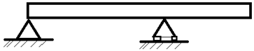
- 연속보
- 외팔보
- 단순보
- 돌출보
(정답률: 57%)
53. 다음 중 저탄소강의 탄소함유량은?
- 0.1~0.3%
- 0.3%~0.5%
- 0.6~1.2%
- 1.2% 이상
(정답률: 66%)
54. 알루미늄-구리-마그네슘계 합금으로 일명 “초두랄루민”이라하고 파괴에 대한 저항성이 우수하며, 피로강도도 양호하여 인장하중에 크게 작용하는 대형 항공기 날개 밑면의 외피나 동체의 외피로 사용되는 것은?
- 2014
- 2024
- 7075
- 7179
(정답률: 73%)
55. 헬리콥터의 고정형 회전날개에 대한 설명으로 틀린 것은?
- 페더링 힌지만 있는 형식이다.
- 관절형 회전날개에 비해 허브의 구조가 간단하다.
- 양력의 불균형 문제로 인해 오토자이로나 초기의 헬리콥터에만 사용되었다.
- 최근 제작되는 대부분의 헬리콥터에서 사용하는 회전 날개 형식이다.
(정답률: 58%)
56. 플라스틱 가운데 투명도가 가장 높으며, 광학적 성질이 우수하여 항공기용 창문 유리로 사용되는 재료는?
- 폴리염화 비닐(PVC)
- 에폭시 수지(EPOXY RESIN)
- 페놀수지(PHENOLIC RESIN)
- 폴리메타크릴산메틸(POLYMETHYL METHACRYLATE)
(정답률: 63%)
57. 헬리콥터에서 조종계통을 정해진 위치에 놓고 고정기구를 사용하여 고정시킨 다음 조종면을 기준선에 맞추고 분도기 등을 이용하여 고정면과 조종면 사이의 변위각을 측정하는 작업은?
- 정적리깅
- 기능점검
- 궤도점검
- 수직평판조정
(정답률: 51%)
58. 허니컴 샌드위치 구조(HONEYCOMB SANDWITCH STRUCTURE)의 장점이 아닌 것은?
- 단열효과가 좋다
- 집중하중에 강하다
- 표면이 평평하며 요철이 없다
- 두께 방향의 균일한 압력 발생시 충격 흡수가 우수하다
(정답률: 57%)
59. 다음중 정하중 시험의 순서를 옳게 나열한 것은?
- 한계하중시험-극한하중시험-파괴시험-강성시험
- 강성시험-한계하중시험-극한하중시험-파괴시험
- 한계하중시험-파괴시험-강성시험-극한하중시험
- 파괴시험-강성시험-한계하중시험-극한하중시험
(정답률: 61%)
60. 정상수평비행 중 날개의 상부와 하부에 작용하는 응력을 순서대로 나열한 것은?
- 전단, 인장
- 전단, 압축
- 압축, 인장
- 굽힘, 압축
(정답률: 71%)